منظومة جهاز الأشعة السينية (التجربتان 1 و2)X-Ray Machine System — Experiments 1 & 2 in Practice
عملي · م01 · 5.8 دقيقةأقسام المحاضرة (6)
المقدمة ومنظومة جهاز الأشعةIntroduction & X-Ray Machine System
General radiography, also known as plain film radiography utilizes projectional radiography to examine anatomy
التصوير الشعاعي العام، ويُعرف أيضاً بالتصوير الشعاعي البسيط (plain film radiography)، يستعمل التصوير الإسقاطي لفحص تشريح الجسم.
منظومة جهاز الأشعة السينيةX-Ray machine system
An X-ray machine uses X-ray to see inside objects. In medicine, radiographers use it to image internal body structures like bones without surgery. X-rays penetrate the body, and different tissues absorb varying amounts, creating the image.
جهاز الأشعة السينية يستعمل الأشعة السينية لرؤية ما بداخل الأجسام. وفي الطب يستعمله المصوّرون الشعاعيون لتصوير التراكيب الداخلية للجسم مثل العظام بدون جراحة: الأشعة تنفذ عبر الجسم، والأنسجة المختلفة تمتص كميات متفاوتة منها، فتتكوّن الصورة.
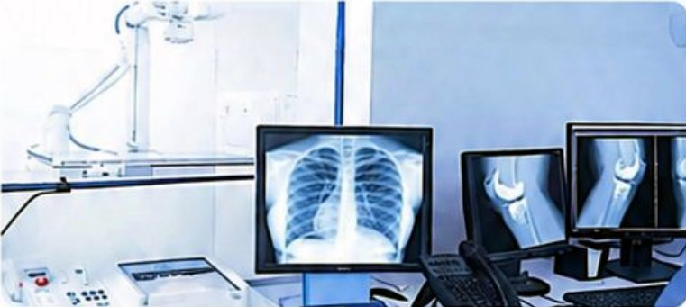
شكل جهاز الأشعة وحجمهX-Ray Machine Shape & Size
The radiographic x-ray tube is mounted on an overhead movable crane system that allows easy positioning and accurate aiming of the x-ray beam.
أنبوب الأشعة الشعاعي مثبّت على رافعة علوية متحركة (movable crane system) تسهّل تحديد مكانه وتوجيه حزمة الأشعة بدقة.
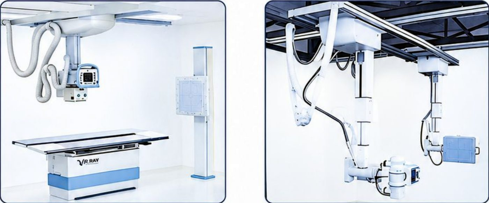
- • The examination couch may be flat or curved but must be uniformly thick and highly x-ray transparent Carbon fiber couches are strong and absorb little x-radiation.سرير الفحص قد يكون مستوياً أو مقوّساً، لكن يجب أن يكون منتظم السُّمك وشفّافاً جداً للأشعة. أسرّة ألياف الكربون قوية وتمتص قليلاً من الأشعة.
- • Most patient couches are floating—easily unlocked and moved by the technologist—or motor driven.أغلب الأسرّة «عائمة»: يفكّ المصوّر قفلها ويحرّكها بسهولة، أو تتحرك بمحرّك.
- • Just under the couch is an opening to hold a thin tray for a cassette and grid.تحت السرير مباشرةً فتحة لصينية رقيقة تحمل الكاسيت والشبكة (grid).
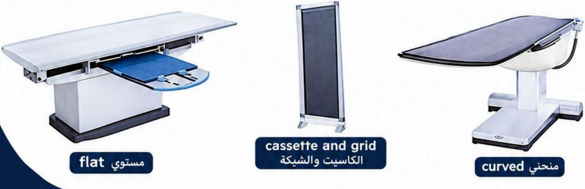
أنواع منظومات جهاز الأشعةX-Ray Machine System Types
حسب الحركة وطريقة التركيب1- By Mobility/Installation
- • Fixed x-ray system: high-power units installed in dedicated rooms.الجهاز الثابت: وحدات عالية القدرة مركّبة في غرف مخصّصة.
- • Mobile X-ray systems: motorized, wheeled units used for bedside imaging.الجهاز المتنقّل: وحدات بعجلات ومحرّك للتصوير بجانب سرير المريض.
- • Portable x-ray system: compact, lightweight, hand-carried units for field or remote use.الجهاز المحمول: وحدات صغيرة خفيفة تُحمل باليد للاستعمال الميداني أو في المواقع البعيدة.
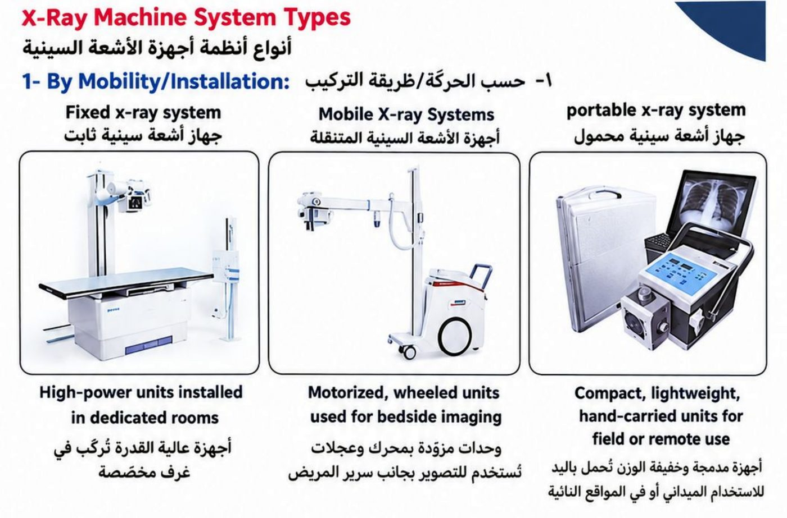
حسب التقنية2- By Technology
- • Traditional/Analog: traditional, non-digital film.التقليدي (التناظري): فلم تقليدي غير رقمي.
- • Digital Radiography (DR): uses digital detectors for instant imaging.التصوير الشعاعي الرقمي DR: كواشف رقمية تعطي الصورة فوراً.
- • Computed Tomography (CT) Scanners: produce 3D cross-sectional images.أجهزة المفراس CT: تنتج صوراً مقطعية ثلاثية الأبعاد.
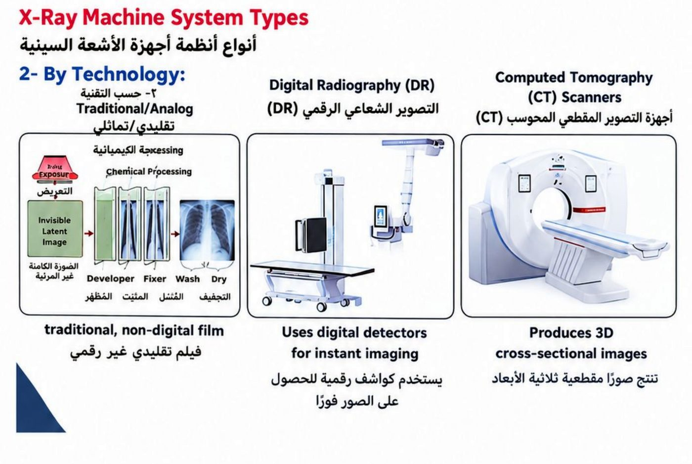
حسب الوظيفة والاستعمال3- By Function/Application
- • Fluoroscopy: provides real-time, continuous X-ray imaging.التنظير الشعاعي: تصوير مستمر بالوقت الحقيقي.
- • C-arm systems: mobile units used in operating rooms.أجهزة C-arm: وحدات متنقّلة تُستعمل في صالات العمليات.
- • U-arm systems: motorized, versatile systems with tube and detector on a rotating U-shaped arm.أجهزة U-arm: أجهزة متعددة الاستعمال بمحرّك، الأنبوب والكاشف على ذراع دوّارة بشكل U.
- • Mammography systems: low-dose, specialized breast imaging.أجهزة تصوير الثدي: تصوير متخصّص قليل الجرعة للثدي.
- • Dental Systems: Intraoral (inside the mouth) · Extraoral (panoramic/cephalometric) (outside the mouth)أجهزة الأسنان: داخل الفم (intraoral) وخارج الفم (extraoral: بانورامي وتصوير جانبي للجمجمة).
- • DEXA scanners: measure bone mineral density.أجهزة DEXA: تقيس كثافة المعادن في العظم.
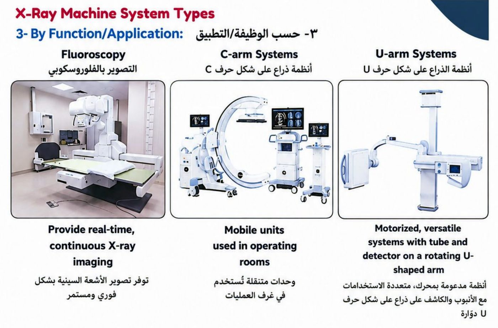
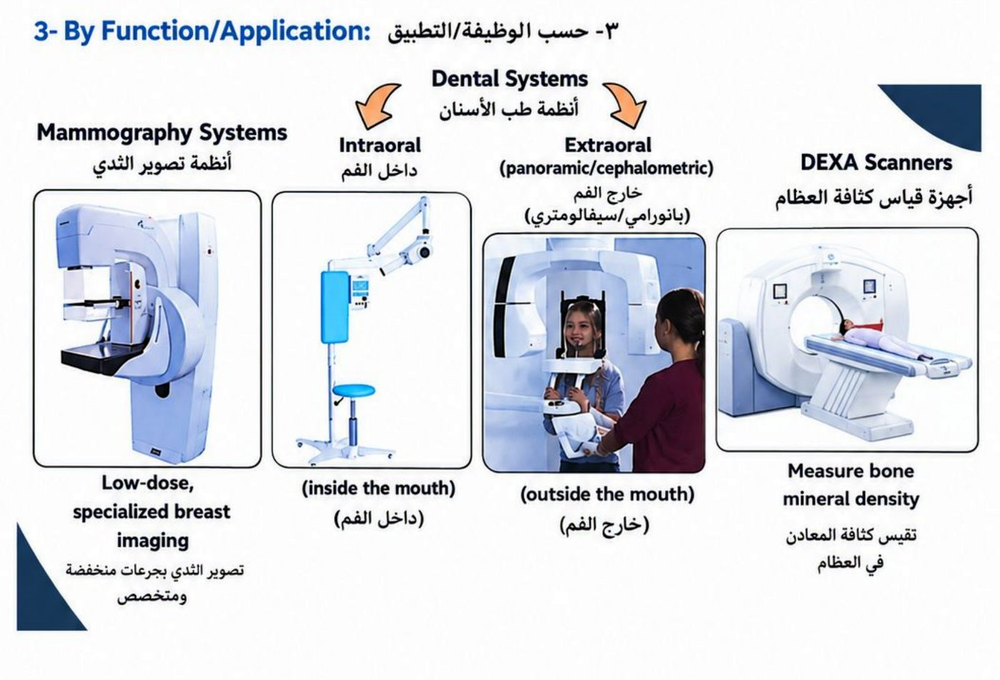
الأجزاء الرئيسية ولوحة التحكمPrincipal Parts & the Operating Console
Principal parts of X-ray machine: three principal parts:
لجهاز الأشعة ثلاثة أجزاء رئيسية:
- 1. The control console: operates the X-ray settings.لوحة التحكم: منها تُضبط إعدادات الجهاز.
- 2. The high-voltage generator: supplies power to produce X-rays.مولّد الجهد العالي: يوفّر الطاقة لإنتاج الأشعة.
- 3. X-ray tube: produces the X-ray beam.أنبوب الأشعة السينية: ينتج حزمة الأشعة.
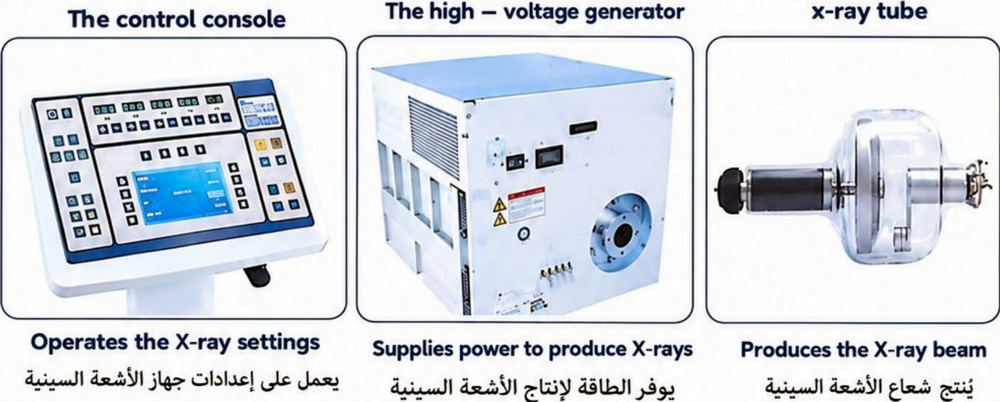
لوحة التحكم (التشغيل)The operating console
The operating console is the technologist’s control panel. It allows adjustment of:
لوحة التحكم هي لوحة المصوّر الشعاعي، وتسمح بضبط:
- 1. kVp (beam penetration)kVp (نفاذ الحزمة).
- 2. mA (beam quantity)mA (كمية الحزمة).
- 3. Exposure timeزمن التعرّض.
- 4. mAs which is actually mA multiplied by the desired exposure lengthmAs، وهو mA مضروباً في زمن التعرّض المطلوب.
- 5. Line Compensationمعاوضة الخط.
to create an X-ray beam with the proper quality and quantity for the exam.
حتى تتكوّن حزمة أشعة بالنوعية والكمية المناسبتين للفحص.
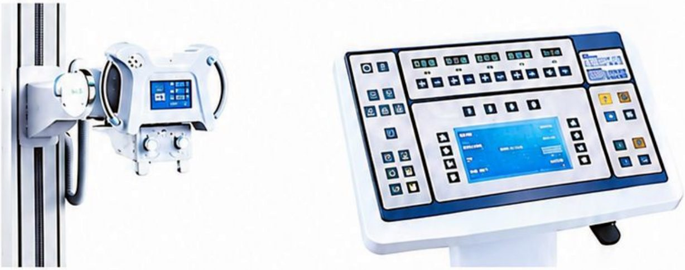
معاوضة الخط والكيلوفولتLine Compensation & Kilovoltage
معوّض الجهد (معاوضة الخط)Voltage compensator control (Line Compensation)
- • The line compensator keeps the incoming voltage constant.معوّض الخط يحافظ على ثبات الجهد الداخل.
- • Because hospital power may fluctuate, it adjusts the voltage to exactly 220 V using a voltmeter (to measure the voltage) and a control (to adjust that voltage).لأن كهرباء المستشفى قد تتذبذب، يضبط الجهد إلى 220 فولت بالضبط بفولتميتر (لقياس الجهد) ومفتاح تحكم (لتعديله).
- • Most x-ray machines are designed to operate on a 220 V power source.أغلب أجهزة الأشعة مصمّمة للعمل على مصدر 220 فولت.
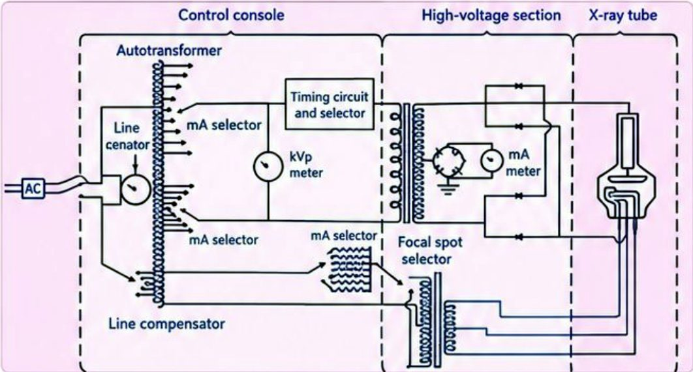
منتقي الكيلوفولت وتأثيرهKilovoltage selector and effect of kilovoltage
The kVp selector allows precise adjustment of kilovoltage. The higher the kilovoltage employed for this purpose:
منتقي kVp يسمح بالضبط الدقيق للكيلوفولت. وكلما زاد الكيلوفولت المستعمل:
- 1. the more rapidly the electrons travelتسرع الإلكترونات أكثر.
- 2. the greater the amount of energyتزيد الطاقة.
- 3. the shorter the wavelengthيقصر الطول الموجي.
الأشعة الصلبة والليّنةHard X-rays vs Soft X-rays
Hard X-rays: short wavelength, high frequency, high energy, high penetration. Soft X-rays: longer wavelength, low frequency, low energy, low penetration.
الأشعة الصلبة: طول موجي قصير، تردد عالٍ، طاقة عالية، نفاذ عالٍ. والليّنة: طول موجي أطول، تردد منخفض، طاقة منخفضة، نفاذ منخفض.
الملي أمبير ودوائر الجهازMilliamperage & X-ray Circuits
عدّاد الملي أمبير ومنتقيه وتأثيرهMilliammeter and milliampere selector and effect of milliampere
- • X-ray tube current is controlled through a separate circuit called the filament circuit, which is provided from taps of the autotransformer.تيار الأنبوب يُتحكَّم به عبر دائرة منفصلة اسمها دائرة الفتيلة، تُغذّى من مآخذ المحوّل الذاتي.
- • Milliampere affects the amount of X-rays produced, and is best expressed in milliampere-seconds.الملي أمبير يؤثّر في كمية الأشعة المنتَجة، وأفضل تعبير عنه بالملي أمبير-ثانية mAs.
- • In summary: kVp = quality, mAs = quantity.باختصار: kVp = النوعية، وmAs = الكمية.
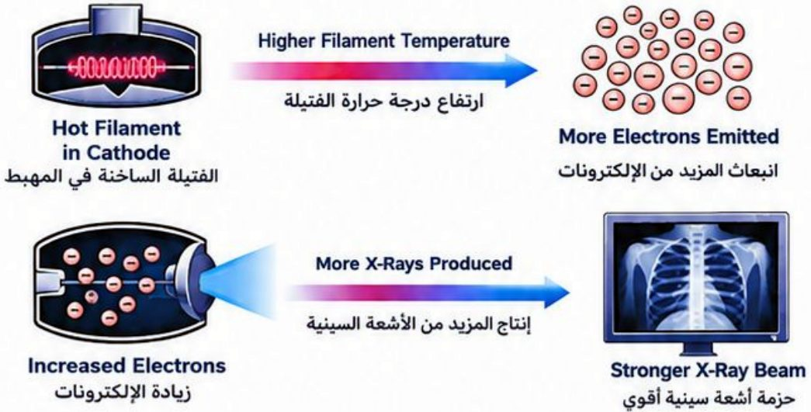
دوائر جهاز الأشعةX-ray circuits
X-ray circuits supply and control the electrical power required for the X-ray tube to produce radiation.
دوائر جهاز الأشعة توفّر الطاقة الكهربائية اللازمة لأنبوب الأشعة وتتحكم بها لإنتاج الإشعاع.
الدائرة الأولية1- Primary Circuit
- • Main Switch/Fuses: Control power input and provide protection.المفتاح الرئيسي والمصهرات: تتحكم بدخول الطاقة وتوفّر الحماية.
- • Line Voltage Compensator: Stabilizes incoming voltage.معوّض جهد الخط: يثبّت الجهد الداخل.
- • Autotransformer: Adjusts voltage and allows selection of the desired kVp.المحوّل الذاتي: يضبط الجهد ويسمح باختيار kVp المطلوب.
- • Exposure Timer: Controls exposure duration.مؤقّت التعرّض: يتحكم بمدة التعرّض.
دائرة الفتيلة2- Filament Circuit
- • Step-down Transformer: Decreases input voltage (120–220 V) to (10–12 V) and increases current to 3–5 A to heat the filament.المحوّل الخافض: يخفّض الجهد الداخل (120–220 فولت) إلى 10–12 فولت ويرفع التيار إلى 3–5 أمبير لتسخين الفتيلة.
- • mA Selector: determining electron quantity (mA) and controls filament temperature.منتقي mA: يحدّد كمية الإلكترونات (mA) ويتحكم بحرارة الفتيلة.
الدائرة الثانوية3- Secondary Circuit
- • Step-up Transformer: Raises voltage to 40–150 kV required for X-ray production.المحوّل الرافع: يرفع الجهد إلى 40–150 كيلوفولت اللازمة لإنتاج الأشعة.
- • Rectifier Unit: Converts AC to DC.وحدة التقويم: تحوّل التيار المتناوب (AC) إلى مستمر (DC).
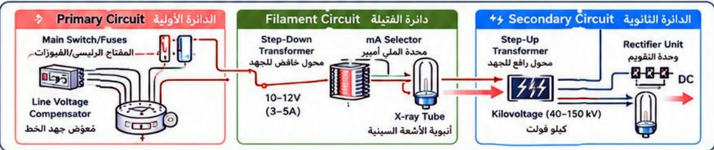
المحاضرة مسموعة
نص الأستاذ بالإنكليزي مثل الأصل · 5.8 دقيقة. اضغط أي جملة تسمعها، أو مصطلح منقّط تسمع لفظه ومعناه.
Introduction & X-Ray Machine Systemالمقدمة ومنظومة جهاز الأشعة
Introduction & X-Ray Machine System
General radiography, also known as plain film radiography utilizes projectional radiography to examine anatomy
X-Ray machine system
An X-ray machine uses X-ray to see inside objects. In medicine, radiographers use it to image internal body structures like bones without surgery. X-rays penetrate the body, and different tissues absorb varying amounts, creating the image.
X-Ray Machine Shape & Sizeشكل جهاز الأشعة وحجمه
X-Ray Machine Shape & Size
The radiographic x-ray tube is mounted on an overhead movable crane system that allows easy positioning and accurate aiming of the x-ray beam.
The examination couch may be flat or curved but must be uniformly thick and highly x-ray transparent Carbon fiber couches are strong and absorb little x-radiation.
Most patient couches are floating—easily unlocked and moved by the technologist—or motor driven.
Just under the couch is an opening to hold a thin tray for a cassette and grid.
X-Ray Machine System Typesأنواع منظومات جهاز الأشعة
X-Ray Machine System Types
1- By Mobility/Installation
Fixed x-ray system: high-power units installed in dedicated rooms.
Mobile X-ray systems: motorized, wheeled units used for bedside imaging.
Portable x-ray system: compact, lightweight, hand-carried units for field or remote use.
2- By Technology
Traditional/Analog: traditional, non-digital film.
Digital Radiography (DR): uses digital detectors for instant imaging.
Computed Tomography (CT) Scanners: produce 3D cross-sectional images.
3- By Function/Application
Fluoroscopy: provides real-time, continuous X-ray imaging.
C-arm systems: mobile units used in operating rooms.
U-arm systems: motorized, versatile systems with tube and detector on a rotating U-shaped arm.
Mammography systems: low-dose, specialized breast imaging.
Dental Systems: Intraoral (inside the mouth) · Extraoral (panoramic/cephalometric) (outside the mouth)
DEXA scanners: measure bone mineral density.
Principal Parts & the Operating Consoleالأجزاء الرئيسية ولوحة التحكم
Principal Parts & the Operating Console
Principal parts of X-ray machine: three principal parts:
The control console: operates the X-ray settings.
The high-voltage generator: supplies power to produce X-rays.
X-ray tube: produces the X-ray beam.
The operating console
The operating console is the technologist’s control panel. It allows adjustment of:
kVp (beam penetration)
mA (beam quantity)
Exposure time
mAs which is actually mA multiplied by the desired exposure length
Line Compensation
to create an X-ray beam with the proper quality and quantity for the exam.
Line Compensation & Kilovoltageمعاوضة الخط والكيلوفولت
Line Compensation & Kilovoltage
Voltage compensator control (Line Compensation)
The line compensator keeps the incoming voltage constant.
Because hospital power may fluctuate, it adjusts the voltage to exactly 220 V using a voltmeter (to measure the voltage) and a control (to adjust that voltage).
Most x-ray machines are designed to operate on a 220 V power source.
Kilovoltage selector and effect of kilovoltage
The kVp selector allows precise adjustment of kilovoltage. The higher the kilovoltage employed for this purpose:
the more rapidly the electrons travel
the greater the amount of energy
the shorter the wavelength
Hard X-rays vs Soft X-rays
Hard X-rays, Soft X-rays
Short wavelength, Longer wavelength
High frequency, Low frequency
High energy, Low energy
High penetration, Low penetration
Hard X-rays: short wavelength, high frequency, high energy, high penetration. Soft X-rays: longer wavelength, low frequency, low energy, low penetration.
Milliamperage & X-ray Circuitsالملي أمبير ودوائر الجهاز
Milliamperage & X-ray Circuits
Milliammeter and milliampere selector and effect of milliampere
X-ray tube current is controlled through a separate circuit called the filament circuit, which is provided from taps of the autotransformer.
Milliampere affects the amount of X-rays produced, and is best expressed in milliampere-seconds.
In summary: kVp = quality, mAs = quantity.
X-ray circuits
X-ray circuits supply and control the electrical power required for the X-ray tube to produce radiation.
1- Primary Circuit
Main Switch/Fuses: Control power input and provide protection.
Line Voltage Compensator: Stabilizes incoming voltage.
Autotransformer: Adjusts voltage and allows selection of the desired kVp.
Exposure Timer: Controls exposure duration.
2- Filament Circuit
Step-down Transformer: Decreases input voltage (120–220 V) to (10–12 V) and increases current to 3–5 A to heat the filament.
mA Selector: determining electron quantity (mA) and controls filament temperature.
3- Secondary Circuit
Step-up Transformer: Raises voltage to 40–150 kV required for X-ray production.
Rectifier Unit: Converts AC to DC.
14 سؤال من نص المحاضرة، ويّا «ليش صح» بعد كل جواب.
ابدأ الاختباراضغط أي مصطلح منقّط تسمع لفظه ومعناه.
PDF ثنائي اللغة: نص الأستاذ + الترجمة + الخلاصة + الأسئلة · 1.6 MB
تحميل الملف